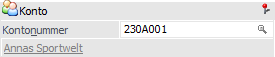
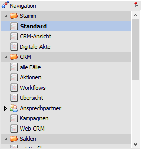
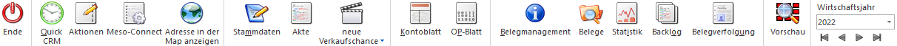
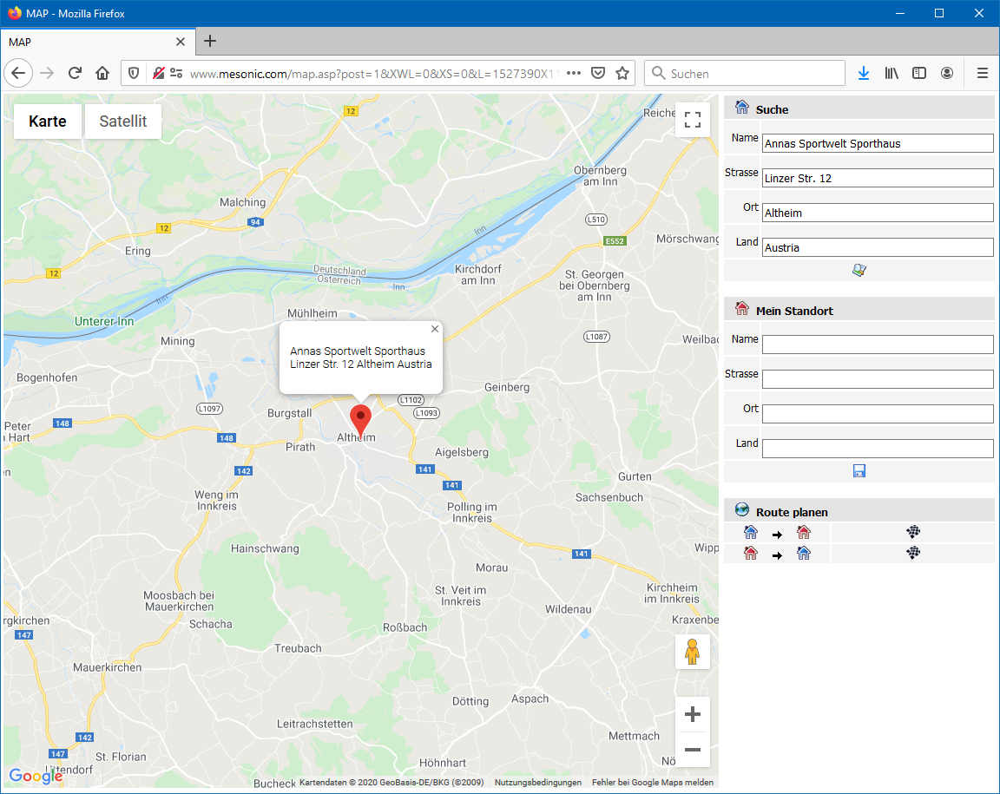

Die Kontoinformation kann über den Menübereich…
1 WinLine INFO
1 Info
1 Konten
… aufgerufen werden. In diesem Bereich stehen die folgenden Info-Module zur Verfügung, wobei der hauptsächliche Unterschied in den Infobereichen der Navigation zu finden ist:
1 Kundeninformation
1 Lieferanteninformation
1 Interessenteninformation
1 Sachkonteninformation
1 Alle Konten
Hinweis
Mittels Drag & Drop können in diese Fenster auch neue Archiveinträge für das Konto hinzugefügt werden. Hierbei wird das Fenster "Neuer Archiveintrag" geöffnet und die Kontonummer und die Kontobezeichnung werden automatisch als Schlagwörter vorgeschlagen.

Konto

Ø Kontonummer
An dieser Stelle wird die Kontonummer eingetragen, welche in der Folge betrachtet werden soll. Abhängig vom aufgerufenen Fenster können folgende Kontentypen aufgerufen werden:
ü Kundeninformation
Personenkonto - Debitor
ü Lieferanteninformation
Personenkonto - Kreditor
ü Interessenteninformation
Interessent - Interessent (Kunde)
Interessent - Anfragelieferant
ü Sachkonteninformation
Sachkonto - Bilanzkonto
Sachkonto - Erfolgskonto
ü Alle Konten
Personenkonto - Debitor
Personenkonto - Kreditor
Interessent - Interessent (Kunde)
Interessent - Anfragelieferant
Sachkonto - Bilanzkonto
Sachkonto - Erfolgskonto
Hinweis
Es wird die zuletzt verwendete Kontonummer vorgeschlagen, sofern der Kontentyp des letzten Kontos zum aufgerufenen Fenster passt (z.B., wenn das "letzte Konto" ein Debitor war, dann wird das Konto nur in den Fenstern "Kundeninformation" und "Alle Konten" vorgeschlagen) Über die rechte Maustaste (Option "Aktuelle Konten") kann auch eines der zuletzt verwendeten Konten direkt ausgewählt werden.
Ø Name
Unterhalb der Kontonummer wird der Kontoname des ausgewählten Kontos angezeigt.
Navigation

Ø Navigation
Im linken Teil des Fensters befindet sich die Navigation, in welcher alle auszuwertenden Teilbereiche mit deren Unteransichten aufgelistet werden. Die Standardansicht wird hierbei in Fettschrift dargestellt und automatisch beim Öffnen der Info geladen (eine Änderung des Standards ist mit Hilfe der rechten Maustaste möglich).
Folgende Bereiche, welche in den nachfolgenden Kapiteln detailliert erläutert werden, stehen (abhängig vom Kontentyp) zur Verfügung:
ü Bereich "Stamm" (nur Debitoren / Kreditoren / Interessenten)
ü Bereich "CRM" (nur Debitoren / Kreditoren / Interessenten)
ü Bereich "Salden" (nur Debitoren / Kreditoren / Sachkonten)
ü Bereich "Detailsalden" (nur Debitoren / Kreditoren)
ü Bereich "Buchungen" (nur Debitoren / Kreditoren / Sachkonten)
ü Bereich "Journalsummen" (nur Debitoren / Kreditoren / Sachkonten)
ü Bereich "Offene Posten" (nur Debitoren / Kreditoren / Sachkonten)
ü Bereich "Mehrjahresvergleich" (nur Debitoren / Kreditoren / Sachkonten)
ü Bereich "Archiv" (nur Debitoren / Kreditoren / Interessenten)
ü Bereich "Belege" (nur Debitoren / Kreditoren / Interessenten)
ü Bereich "Statistik" (nur Debitoren / Kreditoren)
ü Bereich "Preise" (nur Debitoren / Kreditoren / Interessenten)
ü Bereich "Budget" (nur Debitoren / Kreditoren)
ü Bereich "Projekte" (nur Debitoren / Kreditoren / Interessenten)
ü Bereich "CRM-Listen" (nur Debitoren / Kreditoren / Interessenten)
Ø rechte Maustaste
Wenn in der Navigation die rechte Maustaste gedrückt wird, so stehen die folgenden Funktionen zur Verfügung:
ü Konteninfo
Es wird das Programm
"Konteninfo" für das gewählte Konto aufgerufen.
ü mit Shortcuts
Über die Funktion
"mit Shortcuts" können die Shortcuts zu den einzelnen Teilbereichen eingeblendet
werden. Diese Einstellung wird benutzerspezifisch abgespeichert.
ü Standardansicht
Über das
Kontextmenü kann zusätzlich bestimmt werden, welcher Bereich bzw. welche Ansicht
als Standardansicht verwendet werden soll (d.h. welche Informationen nach
Bestätigen der Kontonummer als erstes dargestellt werden sollen).
Dazu muss
der gewünschte Ordner bzw. Eintrag angewählt und über die rechte Maustaste die
Funktion "Standardansicht" angeklickt werden. Anschließend wird dieser Eintrag
in Fettschrift dargestellt.
Darstellung / Aktion

In dem Bereich "Darstellung / Aktion" kann die Darstellung des gewählten Info-Bereichs (siehe "Navigation") definiert werden. Zusätzlich werden hier die Aktionen (Sonderbuttons) der jeweiligen Anzeige zur Verfügung gestellt.
Ø Darstellung
An dieser Stelle kann mit Hilfe einer Auswahlliste gewählt werden, ob die Darstellung der gewünschten Informationen in Form eines Formulars oder einer Tabelle erfolgen soll. Die gewählte Darstellung wird pro Info-Bereich benutzerspezifisch gespeichert.
Ø Submand.
Die Option "Submand." (alle Submandanten) ist im Bereich "Stamm" nur dann vorhanden, wenn die Konzern-Konsolidierung im Einsatz ist. Damit kann gesteuert werden, ob die Informationen aus den Sub-Mandanten in den einzelnen Bereichen mit angezeigt werden sollen. Diese Einstellung wird benutzerspezifisch gespeichert.

Wenn aus der Konteninformation ein Programm der WinLine FAKT mit Hilfe der folgenden Buttons geöffnet und dort die Kontonummer nicht verändert wird, so gelangt man bei deren Schließung automatisch wieder in die WinLine INFO zurück.
Ø Ende
Durch Anwahl des Buttons "Ende" bzw. der Taste ESC wird die Kontoinformation beendet.
Ø Quick CRM
Wenn dieser Button angeklickt wird, kann ein CRM-Fall zu dem gerade angezeigten Konto erfasst werden. Voraussetzung dafür ist:
ü Es muss eine gültige CRM-Lizenz vorhanden sein.
ü Der Benutzer muss ein CRM-Benutzer sein.
ü Es müssen entsprechende CRM-Aktionen bzw. CRM-Workflows mit der Kennzeichnung "QUICK CRM" angelegt sein.
Hinweis
Es werden im WinLine Standard 9 CRM-Aktionen (CRM-Gruppe "100") mitgeliefert.
Ø Aktionen
Durch Anklicken des Buttons "Aktionen" wird ein Kontextmenü geöffnet, in dem verschiedene Aktionen zur Verfügung stehen, die für das Konto ausgeführt werden können.
Hinweis 1
Wenn der Fokus auf einem Ansprechpartner (Bereich "CRM") liegt, dann werden die Aktionen mit diesem Kontakt ausgeführt.
Hinweis 2
Im Programm "Aktionen" (WinLine START - Parameter - Aktionen) können zu den jeweiligen Aktionen auch CRM-Aktionen bzw. CRM-Startpunkte definiert werden.
Die standardmäßig zur Verfügung stehenden Aktionen haben folgende Funktionen:
ü  eMail senden
eMail senden
Wenn beim Konto eine
E-Mail-Adresse hinterlegt ist, öffnet sich das Postausgangsbuch zum Erstellen
und Versenden von E-Mails.
ü  Brief schreiben
Brief schreiben
Es wird das
Postausgangsbuch geöffnet, in dem ein Serien-Brief ausgegeben werden kann.
ü  Fax
Fax
Es wird das Postausgangsbuch geöffnet,
in dem ein Serien-Fax ausgegeben werden kann.
ü  Telefon 1 anrufen
Telefon 1 anrufen
Wird diese Aktion
gewählt und ist beim entsprechenden Datensatz auch eine Telefonnummer
eingetragen, wird - sofern die entsprechenden Voraussetzungen vorhanden sind -
die Telefonnummer 1 gewählt.
ü Telefon 2 anrufen
Wird diese Aktion
gewählt und ist beim entsprechenden Datensatz auch eine Telefonnummer
eingetragen, wird - sofern die entsprechenden Voraussetzungen vorhanden sind -
die Telefonnummer 2 gewählt.
ü Mobiltelefon anrufen
Wird diese Aktion
gewählt und ist beim entsprechenden Datensatz auch eine Telefonnummer
eingetragen, wird - sofern die entsprechenden Voraussetzungen vorhanden sind -
die Mobiltelefonnummer gewählt.
Ø Meso-Connect
Durch Anklicken des Buttons "Meso-Connect" wird ein Kontextmenü geöffnet, in dem standardmäßig folgende "Meso-Connect"-Aktionen zur Verfügung stehen:
ü  Mail
Mail
An das Konto kann mit dieser Aktion
eine Mail geschickt werden. Es öffnet sich dazu das Meso-Connect-Mail Fenster
indem die Betreffzeile des Mails sowie ein Text angegeben werden kann. Weiter
besteht noch die Möglichkeit, ein Attachement anzuhängen. Voraussetzung ist,
dass bei den gewählten Datensätzen auch eine E-Mail-Adresse vorhanden ist.
ü  Kontakte
Kontakte
Mit dieser Aktion kann ein
Abgleich mit den Microsoft Outlook-Kontakten durchgeführt werden, wobei es 4
unterschiedliche Szenarien geben kann:
ü 1. Der Datensatz ist in Outlook noch nicht vorhanden. In diesem Fall wird der Kontakt neu angelegt.
ü 2. Der Datensatz ist in Outlook bereits vorhanden, in der WinLine wurde eine Änderung durchgeführt. In diesem Fall werden die veränderten Daten an Outlook übergeben.
ü 3. Der Datensatz ist in Outlook bereits vorhanden und wurde dort auch verändert. In diesem Fall werden die veränderten Daten in die WinLine übernommen.
ü 4. Der Datensatz ist in Outlook und in der WinLine bereits vorhanden und wurde auch in beiden bereits verändert. In diesem Fall erfolgt eine Frage, welche der Daten aktualisiert werden sollen.
ü  Excel
Excel
Damit wird das Programm Microsoft
Excel gestartet und das Konto mit den Spaltenüberschriften übergeben.
ü  Word
Word
Bei dieser Aktion wird Microsoft
Word gestartete und die Daten des Kontos übergeben.
ü  StarCalc
StarCalc
Sofern das Programm StarCalc
installiert ist, können die Daten in dieses Programm übergeben werden.
ü  StarWrite
StarWrite
Sofern das Programm StarWrite
installiert ist, können die Daten in dieses Programm übergeben werden.
ü  Wizard
Wizard
Über diesen Eintrag kann der
MESO-Connect Wizard aufgerufen werden, mit dem neue Aktionen erstellt bzw.
bestehende Aktionen verändert werden können.
Ø Adresse in der Map anzeigen
Wenn dieser Button angeklickt wird, wird - sofern eine Internetverbindung vorhanden ist - eine Internetseite geöffnet, in welcher der Standort der gewählten Adresse angezeigt wird.

Hinweis
Wenn im Bereich "Mein Standort" die eigene Adresse eingegeben wird, dann kann auch die Route zum Ziel ermittelt und angezeigt werden. Die Speicherung des eigenen Standorts per Cookie ist auch möglich.
Ø Stammdaten
Je nach Kontotyp (Sachkonto, Personenkonto, Interessent) wird dessen Stammdaten-Programm geöffnet und das Konto geladen.
Ø Akte
Durch Anklicken des Buttons Akte wird das Fenster "Akte" geöffnet, wo Detailinformationen zu diesem Konto in Bezug auf andere Datenbereiche eingesehen werden können (nähere Information hierzu entnehmen Sie bitte dem Kapitel Akte).
Ø neue Verkaufschance / neues Projekt
Mit Hilfe dieses Buttons kann, abhängig vom Info-Modul, eine neue Verkaufschance bzw. ein neues Projekt angelegt werden. Die gewählte Kontonummer wird hierbei automatisch in die Verkaufschance bzw. in das Projekt übertragen.
Hinweis
Im Info-Modul "Kontoinformation" (Alle Konten) handelt es sich um einen Auswahl-Button, d.h. es kann wahlweise eine Verkaufschance oder ein Projekt angelegt werden.
Ø Kontoblatt
Mit diesem Button wird in die WinLine FIBU gewechselt und das Kontoblatt für das eingegebene Konto ausgegeben.
Ø OP-Blatt
Durch Drücken dieses Buttons wird in die WinLine FIBU gewechselt und das OP-Blatt für das eingegebene Konto geöffnet.
Ø Belegmanagement
Beim Drücken dieses Buttons wird in die WinLine FAKT gewechselt und das Belegmanagement für das aktive Konto geöffnet.
Ø Belege
Durch Anwahl des Buttons "Belege" wird in der WinLine FAKT das Programm "Belege" in dem Modus "Info" geöffnet. In diesem werden alle Belege des Kontos, eingeschränkt auf das aktuelle Jahr, angezeigt.
Ø Statistik
Wird dieser Button gedrückt, so wird in die WinLine FAKT gewechselt und die Verkaufsstatistik für das aktive Konto ausgegeben.
Ø Backlog
Beim Anklicken dieses Buttons wird in die WinLine FAKT gewechselt, das Backlog geöffnet und die Informationen für das aktive Konto angezeigt
Ø Belegverfolgung
Durch Drücken dieses Buttons öffnet sich das Fenster "Belegverfolgung" (nähere Informationen entnehmen Sie bitte dem WinLine FAKT2 - Handbuch, Kapitel "Belegverfolgung").
Ø Vorschau
Durch Anwahl des Buttons "Vorschau" kann die Vorschau für Archiveinträge aktiviert werden.
Ø Wirtschaftsjahr
An dieser Stelle kann das Wirtschaftsjahr, von welchem die Daten angezeigt werden sollen, auswählen werden.
Ø VCR-Buttons
Über die so genannten VCR-Buttons kann durch Mausklick zwischen den Datensätzen geblättert werden.
ü  Damit kann der
erste Datensatz angesprochen werden.
Damit kann der
erste Datensatz angesprochen werden.
ü  Damit kann der
vorherige Datensatz angesprochen werden.
Damit kann der
vorherige Datensatz angesprochen werden.
ü  Damit kann der
nächste Datensatz angesprochen werden.
Damit kann der
nächste Datensatz angesprochen werden.
ü  Damit kann der
letzte Datensatz angesprochen werden.
Damit kann der
letzte Datensatz angesprochen werden.